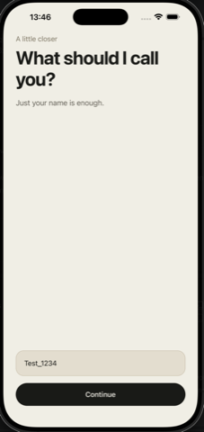
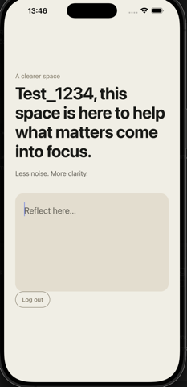

Journal Onboarding
En mobil onboarding-flow för en journal-app, byggd med React Native och Expo. Fokus på ett lugnt, textdrivet flöde där formulärhantering, navigation och backend-integration mot Supabase knyts ihop till en sammanhängande upplevelse.
- React Native
- Expo
- TypeScript
- Supabase
- REST API


Micro Walk — Step Counter
En iOS-funktion byggd i Expo/React Native: en live, HealthKit-baserad stegräknare kopplad till en guidad 2-minuters gångsession med animerad figur, progress-ring och en Lock Screen/Dynamic Island-aktivitet som tickar ner helt nativt. Allt körs on-device, helt utan backend.
- React Native
- Expo
- TypeScript
- HealthKit
- Live Activities
- iOS